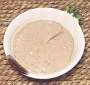

|
Anchovy Cream DipPuerto Rico - Crema de Anchoas | ||||
| Makes: Effort: Sched: DoAhead: |
1-2/3 cups ** 20 min Best |
While I have toned it down a trifle, this is still a rather intense dip, to be used where an intense dip / sauce is appropriate. | |||
|
|
16 2/3 1/4 1 1/2 1/2 1/2 |
c c T T t T |
Anchovy Fillets (1) Cream Cheese Mayonnaise Parsley Lime Juice Pepper blk Water |
Make: (20 min)
|